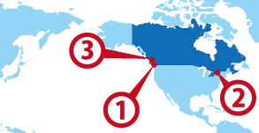

Vancouver
Vancouver Toronto
Toronto Victoria
Victoria
ワーホリ協定国一覧へ戻る

カナダ人気都市 BEST3
カナダ基本情報
| 首都 | Ottawa |
|---|---|
| 言語 | English, French |
| 面積 | 9,984,670 km²(世界2位) |
| 人口 | 34,127,000人(世界36位) |
| 通貨 | Canada Dollar (CAD) |
＊2014 年10 月時点の数値です
| 日本時間 | VANCOUVER | TORONTO |
|---|---|---|
 1月1日 09:00am |
12月31日 17:00pm |
12月31日 20:00pm |
＊サマータイムの期間は時差が変動します
| 首都 | Ottawa |
|---|---|
| 面積 | 9,984,670 km²(世界2位) |
| 人口 | 34,127,000人(世界36位) |
| 言語 | English, French |
|---|---|
| 通貨 | Canada Dollar (CAD) |
＊2014 年10 月時点の数値です |
|
日本との時差
| 日本時間 | VANCOUVER | TORONTO |
|---|---|---|
|
1月1日 09:00am |
12月31日 17:00pm |
12月31日 20:00pm |
＊サマータイムの期間は時差が変動します
カナダってどんな国？
１０州と３つの準州からなるが日本人に有名なのはバンクーバーのあるブリティッシュコロンビア州、とカナダで一番大きな都市トロントがあるオンタリオ州だ。 トロントからはニューヨークが近くて、バンクーバーからはシアトルが近く、車でイチロー選手を応援に行くのもカナダワーキングホリデーの楽しみ。
ロッキー山脈は絶景で2010年にはウィンターオリンピックがバンクーバーとウィスラーで行われフィギュアスケート女子銀メダルの浅田真央や女子モーグルの上村愛子の入賞は記憶に新しい。 冬が長く最長で8カ月もウィンタースポーツが出来るのも魅力。
赤毛のアンが有名なプリンスエドワード島も有名。その近くのハリファックスという町に英語留学する人もいる。 バンクーバー夏は涼しく冬はロッキー山脈の雪が解けて雨になるため雨の冬が続く。
ケベック州はフランス語圏になるのでフランス語がわからないと厳しい。 ケベック州でワーキングホリデービザで就労する場合はケベック州の雇用主がＣＡＱを取得する必要がある。 就学条件と就労条件は変わらない。
▼▼▼まずは無料セミナーへ！ワーキングホリデー＆留学の無料セミナーはこちら！▼▼▼